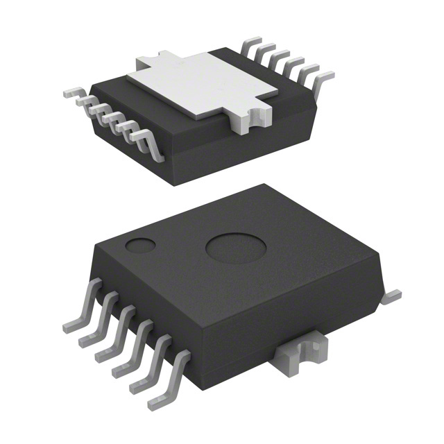
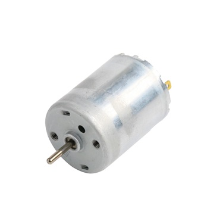
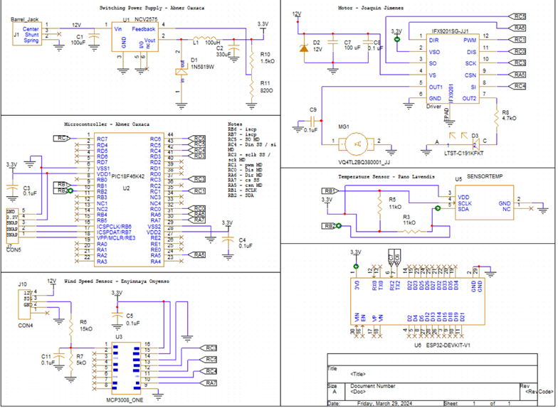

Team Members
- Joaquin Jimenez
- Enyinnaya Onyenso
- Abner Oaxaca
- Panagiotis Levendis
- Created:
- 01/19/2024
- University:
- Arizona State University
- Course:
- EGR-314
- Professor:
- Travis Kelly
Team Organization
Introduction
The RegFan is a portable fan controlled by sensors represents a modern and efficient approach to personal cooling solutions. By integrating sensors that monitor temperature and wind speed this innovative fan offers a dynamic and responsive cooling experience tailored to individual preferences. The way that our invention works is by determining certain thresholds from a wind speed sensor and a temperature sensor once the thresholds are broken this would cause the motor to spin one direction. With the use of the temperature sensor and windspeed sensor it could be determined the most efficient times that the fan would be on. If the fan was built on a larger scale it could have many uses. For example, it could be used for livestock making it easier to take care of animals even when they are unable to be attended to, or even for large audiences so that buildings are not constantly wasting energy by using a fan when it is not needed. This introduction sets the stage for exploring the objectives, stakeholders, use cases, aspects, open questions, milestones, and an explanation of terms associated with this technology.
Charter
Our team aims to influence how the weather forecast influence people's lives. We aim to achieve this by developing a user-friendly, eco-friendly and hands-free device that can detect and predict, based off past patterns, weather phenomenon.
Mission Statement
Our product is dedicated to providing reliable, real-time weather information in a user-friendly manner, empowering individuals and communities for informed decision-making in various fields. Through innovative and eco-friendly technology, we aim to enhance accessibility to crucial weather insights, promoting safety, efficiency, and a deeper understanding of the natural environment, ultimately making a positive impact on the world.
User Needs, Benchmarking, and Requirements
We identified our user needs by conducting research on products that are on the market. By combing through the pages of reviews, five stars to one star, we were able to distill what the user was looking for in a mobile weather station. Our team specifically picked out smart fans and anemometers as a market to pursue and from what we gathered, the user needs were apparent. By going through the reviews of popular and unpopular wind devices, we identified sore spots or highlights the consumer continuously pointed out in their reviews. We took these pain points and praises, separated out the fluff and kept what was relevant to us, dividing this data up into two categories, Latent and Explicit. Explicit being more easily identifiable pain points and Latent being points that are more difficult to pin down as to why they're frustrating. We then took these points and turned them into specifications from where our product can draw its strengths from. To ensure these specifications our design will revolve around we will constantly be referring to our list of product requirements to make sure we incorporate them in our product. Our product requirements list is our most purest form of user needs that relate specifically to our device and with this list we can asses our device according to it. Some standout requirements included the device should withstand extreme heat and cold temperatures, the device is made from durable material, the device should include an emergency switch and the device should have intuitive user control. The focus of our project is in creating a device capable of reading wind speed and temperature and using the information to heat or cool the room. For the full list of product requirements and user needs they can be found in the appendix.
Design Ideation
Every team member played the key role in the design process, we each came up with a list of ideas for a design concept which was bounced around. We used a couple of different brainstorming methods including mind mapping, figure storming, rapid ideation and analyzing customer reviews. Everyone was able to pitch their ideas and we voted on which would be the best device for our group and the projects scope. We then took these ideas and ranked them with a 3 star system, 1 being the least important and 3 being the most important. Then we created a concept of our device around the ideas we ranked so we can have the most variety and originality as possible in our device. The concepts can be found in the appendix.
Final Selected Design
The design we decided to pursue was the fan concept. We chose it for a few reasons including its simplicity. The aim of our group is to produce a product that adheres as closely to the product requirements and and user needs as possible which is attainable with the simplicity of the concept. Another reason we chose the fan was because it showcases all the strengths and weaknesses of each subsystem making debugging and testing easier in the later stages of the project.
Final Block Diagram

The wind speed sensor and motor subsystem interface through the Serial Peripheral Interface (SPI) communication protocol, enabling efficient data exchange and control. Meanwhile, the temperature sensor operates using the I2C protocol, providing accurate temperature readings. The microcontroller serves as the central orchestrator, managing communication between all subsystems and interfacing with the ESP32 for broader connectivity. This collaborative approach ensures a cohesive integration of diverse functionalities, leveraging distinct communication protocols for optimal performance and fulfilling the overall project objectives effectively.
The first set of components we picked were specifically to fulfil the requirements of the project. We had done a component selection and picked parts that fit our criteria and were familiar to us. However, the first motor we received was very small and unable to fulfil our primary need of having a working fan. Our voltage regulator also did not meet our requirement of being 3.3V as we had ordered a non adjustable version of the part we needed. Our block diagram was made by referencing our prd to ensure we had a cohesive project. Our block diagram met our project requirements by providing a guideline for which we selected and replaced our parts. We outlined our pins and communication protocols and when parts needed to be replaced, we referenced our diagram to ensure part compatibility
Component Selection
| Component | Pros | Cons |
|---|---|---|
| Temperature Sensor: AT30TS74-SS8M-B | High operating temperature range, I2C communication, good documentation | Low accuracy compared to other options |
| Wind Speed Sensor: Adafruit 1733 | good external documentation, easy use debugging | Lack of a readable datasheet (available in Chinese) |
|  Motor Driver: IFX9201SGAUMA1 | Familiarity, 3.3V operating Voltage, good documentation, low standby current | Most expensive option |
|  Motor: PKN12EB105C1 | Motor works at 3.3V, decent size, would work well for product. | The amount of current it takes in may be too much and datasheet is not too useful. |
| Voltage Regulator: NCV2575D2T-5R4G | Has an adjustable regulator circuit in datasheet, is able adjust voltage to 3.3V, has a reliable current limit. | Wide Voltage Range, although it can be helpful it may be difficult to get 3.3V out because of this. |
| Power Supply: PS-2.1-12-25WTM 12V Wall Adapter | long cable, 1 A current | 12V, Requires Connector jack |
The major components selected were the AdaFruit 1733 anemometer, a IFX9201SGAUMA1 Motor Driver, a PKN12EB105C1 12V DC Motor, a PS-2.1-12-25WTM wall connector,a NCV2575D2T-5R4G 3.3V switching Power Supply, and a AT30TS74-SS8M-B Temperature Sensor. Next we needed to power these components, so we created a power budget to map out our power needs and what solution would best fit to satisfy those needs. The sensors pull little to no current, however the microcontroller and the motor can require a lot of current. The amount of current needed to power these components reliably led us to decide going with the 12V wall power supply that is stepped down to 3.3V to supply the specified power to the sensors,motor, and motor driver. Using the wall power supply was more feasible for this project. During our tests, we believe we were drawing way more current on our pcb than was needed. This ultimately led to us losing a few passive components which burned out and our final board unusable as we were unable to truly find the cause.
Microcontroller Selection
Our chosen microcontroller is PIC18F46K42. It is an 8-bit, 44 pin microcontroller with 2 I2C pins and 1 SPI pin. We chose it due to it's expansive datasheet and availability of external use documentation. It operates at 1.8V and has a max current of 350mA.
Final Hardware Implementation
Our schematic satisfies user needs and requirements because it nearaly eliminates the use of wires, other than connections for the wind speed sensor and the motor which require it for our use. With the use of the ESP32 the user would be able to see the temperature and windspeed to be able to determine whether they want the device on or not.
Most of the changes that were made in the schematic mostly came from advice we took from TAs or smaller things like resistor values. One of the biggest changes that came after presenting was the use of a LED. Instead of connecting both sides of the motor to both outputs we had one input connected to the motor and one connected to the LED for proof that the motor could be bidirectional if we wanted it to be.

We were able to make our final design with the use of our testing PCB. For our prototype board we were using a ton of wires and we learned and realized that all of those wires were not ideal. We also learned that a motor constantly changing directions would not be good for the system because it uses up a lot of power so we changed one of the output pins of the motor to a LED
For our second version the main component that we were missing from our PCB had to be a fuse. Although at first we were unsure of how to implement a fuse once we learned we realized that it would have been very important. Another thing we possibly should have done differently was making our PCB design more simple and organized. At first glance the PCB looked amazing to all of us however once we began working on it, it kept shorting and we could not figure out why when we would continuity test it. Once we asked for help from TAs they wanted to look at our schematics but they would not have been able to figure out what was wrong with it without taking it apart because of how messy they said it is. Another thing we would have liked to have done differently was our power source, due to time constraints we were kind of stuck with using a power jack however we believe it would have looked much better if we used something like a battery or any other power source. Finally we wish we had more debugging LEDs on our final board, we made use of some when using our protoboard however we decided that we would not have needed them for our final prototype and this really caused us difficulties. Although it would not have changed much because our PCB was shorting somewhere it definitely would have allowed us to realize sooner that we would not have been able to fix our PCB earlier on.
Final Software Implementation

- We noticed that we were unable to get any readings from the UART but it was because we were using data bytes and they were unable to be read without the proper code, which is a change we were able to make last second.
- There were changes made in the code for the motor driver code to help with possible debugging, we added an led to simulate movement in the motor
- Changes had to be made of the pins we used because we had to be careful with the UART pins and output pins.
- We added a delay which would prevent the code from constantly reading.
- For our software proposal we didn't implement the code for the ESP32 which is something that we added in last second.
As we geared up for our final software rollout, our top priority was to enable the motor speed to adapt based on inputs from both the windspeed and temperature sensors. It was something we had envisioned from the get-go but couldn't quite pull off due to time constraints. Our approach would have been to keep it simple, considering the motor's hefty power consumption. So, any speed adjustments would have been on the conservative side.
Our code structure was pretty organized, with each subsystem neatly separated. But debugging was a bit of a headache since we couldn't easily check if everything was working without MQTT integration, which was a bit tricky to set up. This made pinpointing issues with certain subsystems a real challenge.
Taking a cue from our hardware setup, adding LED indicators in the code to light up when certain thresholds were met could have been a game-changer for troubleshooting. And given more time, we would have loved to add the option to kickstart the invention using WiFi communication, making it even more user-friendly.
The current fan control system's software design can benefit from several improvements in Version 2.0. These enhancements aim to create a more robust, reliable, and maintainable system.
Enhanced Robustness: The current design lacks explicit error handling. Version 2.0 should incorporate checks for invalid sensor data or communication errors. Error messages can be logged or displayed to aid in troubleshooting, improving the system's ability to handle unexpected situations.
Modular Design with State Machine: Instead of a simple loop, a state machine can manage the different operational states of the control system. This state machine, encompassing states like initialization, normal operation, shutdown, and fault mode, would make the code more modular and easier to understand.
Improved Readability and Maintainability: The current code can be improved by dividing it into smaller, well-defined functions. These functions, dedicated to tasks like initialization, sensor data reading, control output calculations, and peripheral communication, would enhance readability and maintainability.
Real-Time Accuracy: To ensure control actions are taken at the appropriate intervals, Version 2.0 should utilize a real-time clock (RTC) peripheral for accurate timing within the control loops.
Reliable Communication: The communication protocol can be strengthened by including error checking and data validation. This ensures the integrity of the data being transmitted between the control system and other subsystems.
An improved software design would have the following structure:
Main Loop: Continuously:
Read sensor data.
Calculate control outputs based on sensor readings and the current state.
Handle and log/display errors if detected.
Send control outputs to the motor and communication subsystems.
State Machine: Controls the program flow, including states like:
Initialization: System initialization occurs here.
Normal Operation: Sensor readings are taken, control outputs are calculated, and sent to peripherals.
Shutdown: The system prepares for shutdown, stopping the motor and closing communication channels.
Fault Mode: The system enters a safe state due to an error, with potential fault recovery actions.
Communication Subsystem: Responsible for sending and receiving data with error checking and data validation for improved reliability.
Motor Subsystem: Receives control signals and controls the motor accordingly.

System Verification
Lessons Learned
Throughout our journey as a team, one of the most significant lessons we embraced was the willingness to let go of a project when necessary. Despite encountering numerous challenges post the acquisition of our manufactured PCB, we persisted in pivoting and exploring various solutions. While our ultimate product didn't materialize as planned, we came remarkably close, and crucially, we gleaned invaluable insights from our missteps. Reflecting on our experience, we acknowledged that without attempting the project at all, our learning from the course would have been considerably limited.
A key realization that emerged was the importance of possessing a deeper understanding of our individual subsystems and tasks. Recognizing that a broader grasp of each other's responsibilities could have expedited troubleshooting processes, we acknowledged the need for enhanced knowledge sharing within the team. Collaborative efforts proved fruitful, with the exchange of perspectives and ideas among teammates significantly enhancing the quality of our assignments.
As the semester unfolded, we became increasingly attuned to the significance of professionalism and effective communication, particularly in public speaking engagements. While our initial struggles with presentations during checkpoint 2 underscored the necessity for improvement, our gradual development culminated in a smoother experience during the innovation showcase. Communication emerged as a critical component, with the realization that clearer communication channels could have alleviated several time-consuming and stressful situations throughout the semester.
The importance of organized schematics became evident, serving as a cornerstone for various aspects of our project, from component values determination to troubleshooting continuity issues. Emphasizing the need for meticulousness, we recognized the value of regularly updating and referencing schematics to streamline our workflow. Additionally, we learned the imperative of thorough continuity checks, a lesson reinforced by the identification of simple yet impactful issues on our testing PCB.
Midway through the semester, we grasped the significance of understanding our audience, a factor that influenced project modifications and decision-making processes. This newfound awareness facilitated more targeted adjustments and enhanced project alignment with stakeholders' expectations. Organization emerged as another focal point, with lapses in updating schematics highlighting the importance of maintaining structured documentation.
Lastly, we learned a crucial lesson post-hoc: the necessity of incorporating protective measures like fuses in our schematics. Recognizing the potential for mitigating damages, such as preventing microchip failures, we acknowledged the missed opportunity and its implications for the project's outcome.
Recommendations for Future Students
- As a team we had trouble soldering together our subsystem for the subsystem checkoffs, we believe the best solution would be to either own a hotplate because of the difficulty of soldering the smaller pieces.
- For the Advanced Serial Communication assignment we recommend that everyone tries their subsystem for this assignment so you have experience with it before you have to build your subsystem PCB.
- Although the professors mention this many times, make sure to record your subsystems whenever you test it. We had subsystems that worked that we did not get graded for because we were unable to provide proof that it worked.
- We recommend that future students try to complete all of the homeworks and ICCs because not only do they help a lot with your invention but they also help your grade in case anything goes wrong with your product
- Another thing we had an issue with is time management. It is best to stay on top of all assignments because it is very easy to fall behind and once you do it is very difficult to stay on track